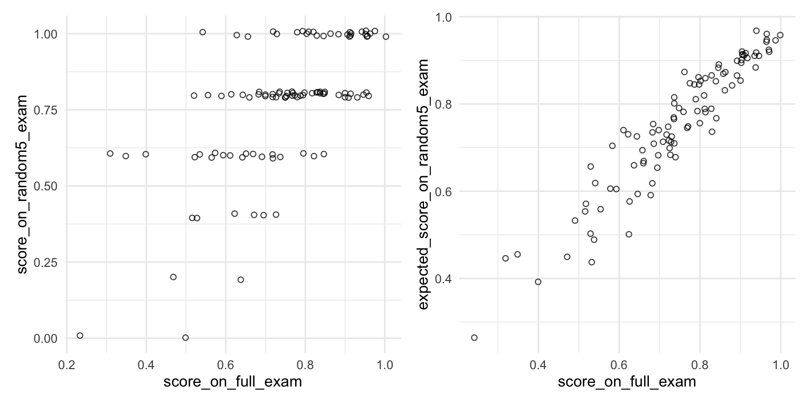
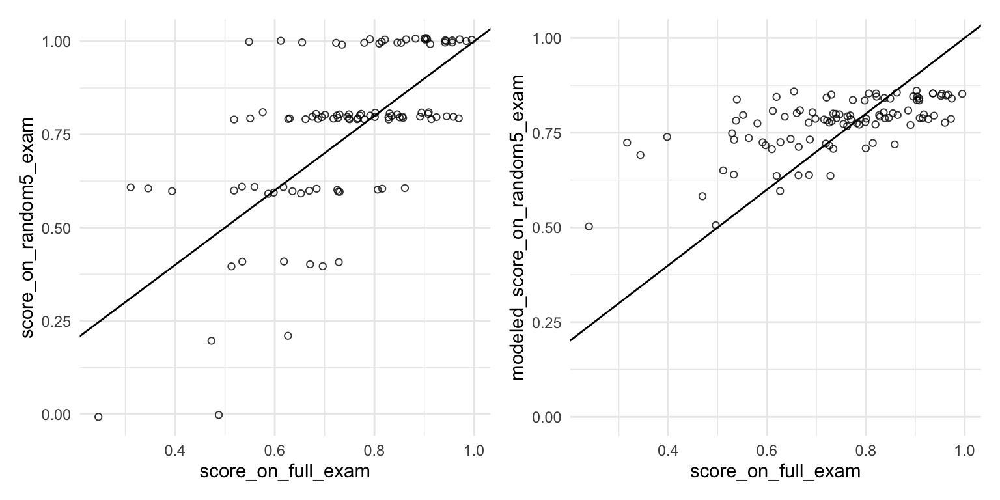

IRT Models
Opening Comments
- Exam
- Workshop
- Paper
Here are the packages we’re using:
This week, I introduce the idea of a IRT model.
This is just one specific type of hierarchical model.
The answers dataset has answers from hypothetical students to real questions from a recent exam.
question_id_numindexes the 55 questions on the exam.student_id_numindexes the 100 students who took the exam.correct_answerindicates (0/1) where the student answered the question correctly.
Rows: 5,500
Columns: 3
$ student_id_num <dbl> 1, 1, 1, 1, 1, 1, 1, 1, 1, 1, 1, 1, 1, 1, 1, 1, 1, 1, 1, 1, 1, 1…
$ question_id_num <dbl> 1, 2, 3, 4, 5, 6, 7, 8, 9, 10, 11, 12, 13, 14, 15, 16, 17, 18, 1…
$ correct_answer <dbl> 1, 1, 1, 1, 1, 1, 1, 1, 1, 1, 1, 1, 1, 1, 0, 1, 1, 1, 1, 1, 1, 1…grades <- answers %>%
group_by(student_id_num) %>%
summarize(proportion_correct = mean(correct_answer)) %>%
mutate(
letter_grade = cut(
proportion_correct,
breaks = c(-Inf, 0.60, 0.63, 0.67, 0.70, 0.73, 0.77, 0.80, 0.83, 0.87, 0.90, 0.93, Inf),
labels = c("F", "D-", "D", "D+", "C-", "C", "C+", "B-", "B", "B+", "A-", "A"),
ordered_result = TRUE
)
)
grades |> filter(student_id_num <= 10)# A tibble: 10 × 3
student_id_num proportion_correct letter_grade
<dbl> <dbl> <ord>
1 1 0.909 A-
2 2 0.527 F
3 3 0.764 C
4 4 0.727 C-
5 5 0.964 A
6 6 0.818 B-
7 7 0.818 B-
8 8 0.782 C+
9 9 0.564 F
10 10 0.8 C+ Rasch / 1-PL model
Indices
- Answers: \(n = 1, \dots, N\). (\(N = 55 \times 100 = 5{,}500\) in our data.)
- Students: \(j = 1, \dots, J\). (\(J = 100\) in our data.)
- Questions: \(k = 1, \dots, K\). (\(K = 55\) in our data.)
Outcome: \(y_{n} \in \{0, 1\}\) indicates whether the \(n\)th answer is correct.
\[ y_n \sim \mathrm{Bernoulli}(\pi_n) \\ \pi_n = \text{logit}^{-1} \left( \mu + \alpha_{j[n]} - \beta_{k[n]} \right). \]
Parameters
- \(\pi_n\): the probability that answer \(n\) is correct
- \(\alpha_{j[n]}\): the ability of student \(j\) [who is giving the \(n\)th answer].
- Higher \(\alpha_j\) ⇒ more likely to answer correctly; more knowledgeable student.
- \(\beta_{k[n]}\): the difficulty of question \(k\) [which is associated with the \(n\)th answer].
- Higher \(\beta_k\) ⇒ less likely to answer correctly; harder item.
- \(\mu\): average difficulty across questions
Hierarchical Model
\[ \alpha_j \sim N(0,\sigma_\alpha^2)\\ \beta_k \sim N(0,\sigma_\beta^2) \]
Priors
\[ \sigma_\alpha \sim \mathrm{half\text{-}Cauchy}(0,1)\\ \sigma_\beta \sim \mathrm{half\text{-}Cauchy}(0,1) \]
\[ \mu \sim \mathrm{Cauchy}(0,1). \]
data {
int<lower=1> N; // number of answers
int<lower=1> J; // number of students
int<lower=1> K; // number of questions
int<lower=1, upper=J> jj[N]; // student index for answer n
int<lower=1, upper=K> kk[N]; // question index for answer n
int<lower=0, upper=1> y[N]; // answer n is correct (0/1)
}
parameters {
real mu; // mean difficulty
vector[J] alpha; // abilities; one per student
vector[K] beta; // difficulties; one per question
real<lower=0> sigma_beta; // SD of difficulties
real<lower=0> sigma_alpha; // SD of abilities
}
model {
sigma_beta ~ cauchy(0, 1); // prior for SD of difficulties
sigma_alpha ~ cauchy(0, 1); // prior for SD of abilities
mu ~ cauchy(0, 1); // prior for mean difficulty
alpha ~ normal(0, sigma_alpha); // abilities
beta ~ normal(0, sigma_beta); // difficulties
for (n in 1:N) {
y[n] ~ bernoulli_logit(mu + alpha[jj[n]] - beta[kk[n]]); // likelihood
}
}# make data for stan
data_list <- list(
# upper bounds of indices
N = nrow(answers), # - n in {1,...,N} indexes answers
J = max(answers$student_id_num), # - j in {1,...,J} indexes students
K = max(answers$question_id_num), # - k in {1,...,K} indexes questions
# indices for each respondent
jj = answers$student_id_num, # jj is a vector of student indices for each answer
kk = answers$question_id_num, # kk is a vector of question indices for each answer
# observed answers
y = answers$correct_answer
)jj and kk are subtle!
- Because all students answer all questions, we have \(N = 100 \times 55 = 5,500\) answers.
jjandkkare both length-\(N\) vectors.jj[n]tells us the student who gave the \(n\)th answer.kk[n]tells us the question that goes with the \(n\)th answer.
I like to create a character string that has the Stan model, so that it’s right in my R script. (Or you can create a file.)
stan_code <- "
data {
int<lower=1> N; // number of answers
int<lower=1> J; // number of students
int<lower=1> K; // number of questions
int<lower=1, upper=J> jj[N]; // student index for answer n
int<lower=1, upper=K> kk[N]; // question index for answer n
int<lower=0, upper=1> y[N]; // answer n is correct (0/1)
}
parameters {
real mu; // mean difficulty
vector[J] alpha; // abilities; one per student
vector[K] beta; // difficulties; one per question
real<lower=0> sigma_beta; // SD of difficulties
real<lower=0> sigma_alpha; // SD of abilities
}
model {
sigma_beta ~ cauchy(0, 1); // prior for SD of difficulties
sigma_alpha ~ cauchy(0, 1); // prior for SD of abilities
mu ~ cauchy(0, 1); // prior for mean difficulty
alpha ~ normal(0, sigma_alpha); // abilities
beta ~ normal(0, sigma_beta); // difficulties
for (n in 1:N) {
y[n] ~ bernoulli_logit(mu + alpha[jj[n]] - beta[kk[n]]); // likelihood
}
}
"Inference for Stan model: anon_model.
3 chains, each with iter=1000; warmup=500; thin=1;
post-warmup draws per chain=500, total post-warmup draws=1500.
mean se_mean sd 2.5% 25% 50% 75% 97.5% n_eff Rhat
mu 1.34 0.01 0.14 1.07 1.25 1.35 1.44 1.61 249 1.01
alpha[1] 0.99 0.01 0.43 0.20 0.70 0.98 1.26 1.91 1451 1.00
alpha[2] -1.14 0.01 0.28 -1.71 -1.34 -1.14 -0.96 -0.57 837 1.00
alpha[3] -0.04 0.01 0.33 -0.68 -0.26 -0.04 0.18 0.60 1341 1.00
alpha[4] -0.23 0.01 0.31 -0.85 -0.44 -0.22 -0.02 0.37 879 1.00
alpha[5] 1.57 0.01 0.50 0.65 1.22 1.54 1.90 2.60 1653 1.00
alpha[6] 0.29 0.01 0.35 -0.40 0.06 0.29 0.53 0.99 1515 1.00
alpha[7] 0.29 0.01 0.36 -0.38 0.03 0.29 0.53 1.01 1562 1.00
alpha[8] 0.07 0.01 0.34 -0.59 -0.17 0.07 0.29 0.76 1064 1.00
alpha[9] -0.98 0.01 0.28 -1.52 -1.17 -0.98 -0.79 -0.43 1183 1.00
alpha[10] 0.19 0.01 0.34 -0.44 -0.03 0.18 0.40 0.92 1077 1.00
alpha[11] 0.54 0.01 0.37 -0.15 0.29 0.52 0.77 1.31 1378 1.00
alpha[12] -0.74 0.01 0.30 -1.34 -0.93 -0.74 -0.55 -0.17 1199 1.00
alpha[13] -0.13 0.01 0.32 -0.73 -0.34 -0.14 0.07 0.52 1217 1.00
alpha[14] 1.58 0.01 0.51 0.63 1.23 1.56 1.92 2.65 1565 1.00
alpha[15] 0.17 0.01 0.34 -0.50 -0.06 0.17 0.41 0.86 1295 1.00
alpha[16] -0.41 0.01 0.33 -1.00 -0.64 -0.42 -0.19 0.24 997 1.00
alpha[17] -0.74 0.01 0.31 -1.37 -0.95 -0.74 -0.53 -0.16 891 1.00
alpha[18] 1.59 0.01 0.49 0.69 1.25 1.57 1.90 2.63 1592 1.00
alpha[19] 1.15 0.01 0.43 0.33 0.86 1.13 1.43 2.05 1655 1.00
alpha[20] 0.54 0.01 0.37 -0.17 0.28 0.54 0.78 1.28 1369 1.00
alpha[21] -0.14 0.01 0.32 -0.71 -0.35 -0.14 0.06 0.53 865 1.00
alpha[22] -2.05 0.01 0.31 -2.70 -2.25 -2.06 -1.83 -1.46 1237 1.00
alpha[23] -0.67 0.01 0.29 -1.26 -0.87 -0.68 -0.48 -0.10 1055 1.00
alpha[24] -0.75 0.01 0.30 -1.31 -0.95 -0.75 -0.55 -0.15 1216 1.00
alpha[25] 0.17 0.01 0.33 -0.48 -0.06 0.18 0.39 0.83 1072 1.00
alpha[26] 2.19 0.02 0.61 1.10 1.76 2.14 2.57 3.47 1149 1.00
alpha[27] -0.57 0.01 0.32 -1.19 -0.79 -0.59 -0.36 0.06 977 1.00
alpha[28] 0.97 0.01 0.41 0.19 0.68 0.96 1.22 1.83 1599 1.00
alpha[29] 1.37 0.01 0.45 0.50 1.06 1.36 1.63 2.34 1730 1.00
alpha[30] 0.98 0.01 0.41 0.21 0.71 0.98 1.25 1.81 1448 1.00
alpha[31] 0.82 0.01 0.42 0.02 0.54 0.80 1.08 1.75 1401 1.00
alpha[32] 1.57 0.01 0.48 0.70 1.24 1.55 1.87 2.61 1440 1.00
alpha[33] 0.97 0.01 0.40 0.22 0.69 0.97 1.22 1.76 1232 1.00
alpha[34] 0.83 0.01 0.40 0.04 0.56 0.82 1.10 1.65 1362 1.00
alpha[35] 1.34 0.01 0.48 0.52 1.01 1.32 1.64 2.36 1193 1.00
alpha[36] -0.42 0.01 0.31 -1.01 -0.63 -0.42 -0.21 0.21 1098 1.00
alpha[37] -0.50 0.01 0.32 -1.13 -0.73 -0.50 -0.29 0.11 1210 1.00
alpha[38] -0.91 0.01 0.30 -1.46 -1.11 -0.92 -0.72 -0.30 1184 1.00
alpha[39] 0.54 0.01 0.37 -0.18 0.28 0.52 0.79 1.31 1193 1.00
alpha[40] -0.49 0.01 0.32 -1.09 -0.70 -0.50 -0.28 0.15 1124 1.00
alpha[41] -1.38 0.01 0.29 -1.94 -1.58 -1.39 -1.17 -0.83 792 1.00
alpha[42] 0.98 0.01 0.42 0.19 0.70 0.97 1.26 1.87 1110 1.00
alpha[43] -0.41 0.01 0.30 -0.97 -0.63 -0.41 -0.21 0.17 905 1.00
alpha[44] 1.00 0.01 0.44 0.20 0.71 0.98 1.27 1.94 1081 1.00
alpha[45] 0.97 0.01 0.41 0.23 0.68 0.96 1.24 1.84 1189 1.00
alpha[46] 0.42 0.01 0.37 -0.27 0.17 0.42 0.68 1.14 1322 1.00
alpha[47] 0.41 0.01 0.37 -0.28 0.16 0.40 0.64 1.17 1157 1.00
alpha[48] -0.04 0.01 0.34 -0.70 -0.26 -0.05 0.18 0.63 851 1.00
alpha[49] -1.07 0.01 0.28 -1.64 -1.26 -1.06 -0.88 -0.50 1026 1.00
alpha[50] -1.21 0.01 0.29 -1.77 -1.42 -1.22 -1.01 -0.63 968 1.00
alpha[51] -0.24 0.01 0.32 -0.84 -0.47 -0.25 -0.02 0.43 1295 1.00
alpha[52] -0.04 0.01 0.34 -0.68 -0.28 -0.03 0.20 0.62 1312 1.00
alpha[53] -1.14 0.01 0.30 -1.70 -1.34 -1.14 -0.94 -0.56 1249 1.00
alpha[54] -0.68 0.01 0.30 -1.28 -0.88 -0.68 -0.47 -0.10 908 1.00
alpha[55] 0.40 0.01 0.36 -0.29 0.15 0.39 0.64 1.11 1358 1.00
alpha[56] 0.28 0.01 0.33 -0.36 0.05 0.27 0.49 0.94 1362 1.00
alpha[57] 0.54 0.01 0.37 -0.16 0.29 0.53 0.78 1.31 932 1.00
alpha[58] -1.88 0.01 0.29 -2.50 -2.08 -1.88 -1.69 -1.29 1127 1.00
alpha[59] 0.81 0.01 0.39 0.07 0.55 0.79 1.06 1.60 1505 1.00
alpha[60] -0.14 0.01 0.32 -0.76 -0.36 -0.14 0.07 0.50 1246 1.00
alpha[61] -0.60 0.01 0.29 -1.17 -0.79 -0.60 -0.41 -0.05 939 1.00
alpha[62] -0.41 0.01 0.30 -1.01 -0.62 -0.41 -0.20 0.20 1090 1.00
alpha[63] -0.23 0.01 0.31 -0.79 -0.44 -0.24 -0.04 0.41 1265 1.00
alpha[64] 0.18 0.01 0.35 -0.48 -0.06 0.17 0.40 0.87 1032 1.00
alpha[65] 1.59 0.02 0.51 0.69 1.25 1.57 1.90 2.68 1113 1.00
alpha[66] -0.23 0.01 0.33 -0.88 -0.46 -0.23 -0.01 0.40 1141 1.00
alpha[67] -2.40 0.01 0.32 -3.05 -2.62 -2.40 -2.18 -1.81 875 1.00
alpha[68] -1.06 0.01 0.30 -1.63 -1.26 -1.07 -0.86 -0.47 1064 1.00
alpha[69] -1.13 0.01 0.28 -1.66 -1.32 -1.13 -0.95 -0.62 867 1.00
alpha[70] -1.14 0.01 0.29 -1.71 -1.34 -1.13 -0.94 -0.59 1085 1.00
alpha[71] 0.41 0.01 0.36 -0.27 0.16 0.41 0.65 1.14 1535 1.00
alpha[72] -0.32 0.01 0.32 -0.94 -0.53 -0.33 -0.11 0.31 1202 1.00
alpha[73] 0.97 0.01 0.41 0.23 0.69 0.95 1.23 1.79 1484 1.00
alpha[74] -0.42 0.01 0.31 -1.00 -0.63 -0.42 -0.21 0.20 1151 1.00
alpha[75] -0.25 0.01 0.32 -0.82 -0.48 -0.25 -0.04 0.39 1368 1.00
alpha[76] -0.22 0.01 0.32 -0.82 -0.44 -0.23 -0.01 0.46 1230 1.00
alpha[77] 1.36 0.01 0.47 0.48 1.04 1.35 1.63 2.34 1147 1.00
alpha[78] -1.29 0.01 0.29 -1.86 -1.49 -1.29 -1.09 -0.73 1083 1.00
alpha[79] 0.17 0.01 0.35 -0.53 -0.07 0.18 0.39 0.84 1131 1.00
alpha[80] -0.23 0.01 0.33 -0.84 -0.46 -0.23 -0.01 0.41 1250 1.00
alpha[81] -0.22 0.01 0.32 -0.82 -0.45 -0.23 0.00 0.43 1437 1.00
alpha[82] 0.67 0.01 0.39 -0.04 0.40 0.65 0.92 1.48 1417 1.00
alpha[83] -0.59 0.01 0.32 -1.21 -0.81 -0.60 -0.37 0.02 1086 1.00
alpha[84] -0.90 0.01 0.30 -1.48 -1.10 -0.89 -0.70 -0.30 1034 1.00
alpha[85] -0.83 0.01 0.29 -1.39 -1.03 -0.83 -0.63 -0.25 863 1.00
alpha[86] -0.49 0.01 0.30 -1.06 -0.71 -0.49 -0.28 0.12 1262 1.00
alpha[87] 1.37 0.01 0.48 0.51 1.04 1.36 1.69 2.34 1568 1.00
alpha[88] 0.28 0.01 0.35 -0.39 0.03 0.27 0.52 1.00 1293 1.00
alpha[89] 0.07 0.01 0.34 -0.54 -0.17 0.06 0.30 0.76 1323 1.00
alpha[90] 0.41 0.01 0.38 -0.30 0.14 0.40 0.67 1.20 1298 1.00
alpha[91] 1.83 0.02 0.55 0.89 1.44 1.79 2.19 2.95 1223 1.00
alpha[92] -0.75 0.01 0.29 -1.31 -0.94 -0.76 -0.55 -0.15 1140 1.00
alpha[93] 0.53 0.01 0.37 -0.13 0.27 0.52 0.77 1.27 1418 1.00
alpha[94] -0.04 0.01 0.33 -0.67 -0.26 -0.05 0.16 0.63 1126 1.00
alpha[95] -0.22 0.01 0.32 -0.86 -0.43 -0.21 0.00 0.41 996 1.00
alpha[96] -1.67 0.01 0.29 -2.23 -1.86 -1.67 -1.47 -1.13 924 1.00
alpha[97] -0.66 0.01 0.30 -1.24 -0.85 -0.65 -0.45 -0.07 1247 1.01
alpha[98] -0.14 0.01 0.34 -0.75 -0.37 -0.15 0.09 0.54 1013 1.00
alpha[99] 0.07 0.01 0.33 -0.55 -0.16 0.07 0.28 0.75 1302 1.00
alpha[100] -0.24 0.01 0.32 -0.87 -0.45 -0.23 -0.02 0.42 1315 1.00
beta[1] -0.66 0.01 0.29 -1.18 -0.85 -0.65 -0.45 -0.12 1508 1.00
beta[2] -0.89 0.01 0.29 -1.49 -1.08 -0.88 -0.69 -0.34 1074 1.00
beta[3] -0.15 0.01 0.26 -0.65 -0.32 -0.15 0.03 0.33 1118 1.00
beta[4] -0.26 0.01 0.29 -0.83 -0.44 -0.25 -0.06 0.28 1367 1.00
beta[5] -0.14 0.01 0.28 -0.70 -0.32 -0.13 0.06 0.39 1441 1.00
beta[6] 0.14 0.01 0.25 -0.36 -0.04 0.15 0.31 0.63 1133 1.00
beta[7] 0.49 0.01 0.25 -0.01 0.33 0.49 0.65 0.98 849 1.00
beta[8] -0.82 0.01 0.29 -1.44 -1.00 -0.81 -0.63 -0.26 1007 1.00
beta[9] -0.74 0.01 0.29 -1.34 -0.93 -0.75 -0.54 -0.20 1587 1.00
beta[10] 0.45 0.01 0.23 -0.01 0.30 0.45 0.60 0.92 1111 1.00
beta[11] -0.33 0.01 0.27 -0.86 -0.50 -0.32 -0.14 0.21 1516 1.00
beta[12] 0.19 0.01 0.24 -0.30 0.04 0.19 0.34 0.65 950 1.00
beta[13] 1.00 0.01 0.24 0.53 0.84 1.00 1.16 1.50 1268 1.00
beta[14] -0.20 0.01 0.25 -0.73 -0.38 -0.20 -0.03 0.28 1298 1.00
beta[15] 0.45 0.01 0.23 -0.02 0.29 0.45 0.61 0.90 977 1.00
beta[16] -0.52 0.01 0.28 -1.06 -0.71 -0.51 -0.34 0.02 1304 1.00
beta[17] -0.82 0.01 0.30 -1.46 -1.02 -0.80 -0.62 -0.29 1090 1.00
beta[18] -0.26 0.01 0.26 -0.75 -0.44 -0.26 -0.09 0.24 1189 1.00
beta[19] -0.66 0.01 0.27 -1.20 -0.84 -0.64 -0.48 -0.13 1240 1.00
beta[20] 0.44 0.01 0.24 -0.04 0.28 0.44 0.61 0.89 1168 1.00
beta[21] -0.59 0.01 0.27 -1.17 -0.77 -0.59 -0.40 -0.07 1402 1.00
beta[22] 0.08 0.01 0.25 -0.44 -0.09 0.09 0.25 0.54 842 1.00
beta[23] -0.59 0.01 0.27 -1.14 -0.76 -0.58 -0.40 -0.08 1362 1.00
beta[24] 0.30 0.01 0.25 -0.19 0.13 0.30 0.46 0.77 1047 1.00
beta[25] -0.08 0.01 0.25 -0.57 -0.25 -0.08 0.09 0.40 1198 1.00
beta[26] 0.35 0.01 0.24 -0.14 0.19 0.35 0.51 0.79 755 1.00
beta[27] 1.57 0.01 0.23 1.13 1.41 1.58 1.73 2.03 966 1.00
beta[28] 1.54 0.01 0.23 1.09 1.38 1.54 1.70 1.98 897 1.00
beta[29] 0.24 0.01 0.24 -0.24 0.08 0.25 0.41 0.69 1124 1.00
beta[30] -1.09 0.01 0.31 -1.72 -1.31 -1.07 -0.87 -0.50 1448 1.00
beta[31] 0.08 0.01 0.25 -0.43 -0.08 0.08 0.25 0.58 1048 1.00
beta[32] -0.90 0.01 0.29 -1.47 -1.09 -0.89 -0.70 -0.34 1318 1.00
beta[33] -1.17 0.01 0.32 -1.81 -1.39 -1.18 -0.94 -0.57 1638 1.00
beta[34] -0.89 0.01 0.31 -1.48 -1.10 -0.88 -0.67 -0.33 1328 1.00
beta[35] 0.72 0.01 0.23 0.27 0.56 0.72 0.87 1.16 951 1.00
beta[36] 0.18 0.01 0.25 -0.29 0.02 0.18 0.35 0.66 1095 1.00
beta[37] -0.44 0.01 0.27 -0.98 -0.62 -0.43 -0.26 0.03 1246 1.00
beta[38] 0.14 0.01 0.25 -0.34 -0.03 0.14 0.30 0.62 1086 1.00
beta[39] 0.44 0.01 0.23 -0.01 0.28 0.44 0.59 0.90 1080 1.00
beta[40] -0.91 0.01 0.31 -1.54 -1.11 -0.91 -0.69 -0.36 1388 1.00
beta[41] -0.38 0.01 0.26 -0.92 -0.55 -0.38 -0.20 0.13 1026 1.00
beta[42] 0.50 0.01 0.23 0.06 0.35 0.51 0.65 0.98 1014 1.00
beta[43] 0.92 0.01 0.22 0.48 0.77 0.92 1.07 1.34 1020 1.00
beta[44] 0.59 0.01 0.24 0.13 0.44 0.59 0.75 1.08 1174 1.00
beta[45] -0.91 0.01 0.31 -1.53 -1.11 -0.90 -0.70 -0.31 1359 1.00
beta[46] 0.86 0.01 0.23 0.41 0.70 0.86 1.01 1.32 953 1.00
beta[47] -0.20 0.01 0.25 -0.70 -0.36 -0.20 -0.02 0.28 1189 1.00
beta[48] 0.08 0.01 0.25 -0.42 -0.09 0.09 0.25 0.55 1116 1.00
beta[49] 1.00 0.01 0.23 0.53 0.85 1.01 1.16 1.43 1048 1.00
beta[50] -0.26 0.01 0.26 -0.79 -0.43 -0.26 -0.07 0.23 1001 1.00
beta[51] 0.14 0.01 0.24 -0.35 -0.02 0.15 0.30 0.62 1145 1.00
beta[52] 0.78 0.01 0.23 0.33 0.61 0.77 0.94 1.22 955 1.00
beta[53] 0.68 0.01 0.24 0.20 0.53 0.68 0.84 1.17 1079 1.00
beta[54] -0.03 0.01 0.26 -0.53 -0.21 -0.02 0.16 0.45 1335 1.00
beta[55] -0.07 0.01 0.26 -0.63 -0.23 -0.07 0.10 0.40 874 1.00
sigma_beta 0.71 0.00 0.08 0.57 0.66 0.70 0.76 0.88 1316 1.00
sigma_alpha 0.98 0.00 0.09 0.82 0.92 0.97 1.03 1.17 1086 1.00
lp__ -2655.77 0.39 9.51 -2676.01 -2661.94 -2655.39 -2648.96 -2638.42 602 1.00
Samples were drawn using NUTS(diag_e) at Wed Oct 29 06:23:10 2025.
For each parameter, n_eff is a crude measure of effective sample size,
and Rhat is the potential scale reduction factor on split chains (at
convergence, Rhat=1).# A tibble: 150,000 × 5
# Groups: student_id_num [100]
student_id_num alpha .chain .iteration .draw
<int> <dbl> <int> <int> <int>
1 1 1.13 1 1 1
2 1 0.938 1 2 2
3 1 1.29 1 3 3
4 1 1.11 1 4 4
5 1 1.17 1 5 5
6 1 1.66 1 6 6
7 1 1.49 1 7 7
8 1 1.74 1 8 8
9 1 1.67 1 9 9
10 1 1.92 1 10 10
# ℹ 149,990 more rows# A tibble: 100 × 7
student_id_num alpha .lower .upper .width .point .interval
<int> <dbl> <dbl> <dbl> <dbl> <chr> <chr>
1 1 0.980 0.203 1.91 0.95 median qi
2 2 -1.14 -1.71 -0.572 0.95 median qi
3 3 -0.0442 -0.679 0.602 0.95 median qi
4 4 -0.221 -0.847 0.372 0.95 median qi
5 5 1.54 0.646 2.60 0.95 median qi
6 6 0.291 -0.402 0.992 0.95 median qi
7 7 0.286 -0.384 1.01 0.95 median qi
8 8 0.0716 -0.590 0.760 0.95 median qi
9 9 -0.980 -1.52 -0.435 0.95 median qi
10 10 0.179 -0.442 0.922 0.95 median qi
# ℹ 90 more rowsCode
fit %>%
spread_draws(alpha[student_id_num], ndraws = 100) %>%
median_qi() %>%
left_join(grades) %>%
slice_sample(n = 25) %>%
ggplot(aes(x = alpha, xmin = .lower, xmax = .upper,
y = reorder(student_id_num, alpha),
color = letter_grade)) +
#geom_label(aes(label = scales::percent(proportion_correct, accuracy = 1)), vjust = -0.3) +
geom_pointinterval(linewidth = 0.5, size = 0.5) +
theme_minimal() +
labs(y = "random sample of 25 students",
color = "letter grade")
# A tibble: 82,500 × 5
# Groups: question_id_num [55]
question_id_num beta .chain .iteration .draw
<int> <dbl> <int> <int> <int>
1 1 -0.687 1 1 1
2 1 -0.174 1 2 2
3 1 -0.506 1 3 3
4 1 -1.12 1 4 4
5 1 -0.899 1 5 5
6 1 -0.675 1 6 6
7 1 -0.0910 1 7 7
8 1 -0.736 1 8 8
9 1 -0.663 1 9 9
10 1 -1.01 1 10 10
# ℹ 82,490 more rows# A tibble: 55 × 7
question_id_num beta .lower .upper .width .point .interval
<int> <dbl> <dbl> <dbl> <dbl> <chr> <chr>
1 1 -0.655 -1.18 -0.122 0.95 median qi
2 2 -0.878 -1.49 -0.344 0.95 median qi
3 3 -0.150 -0.645 0.331 0.95 median qi
4 4 -0.247 -0.833 0.282 0.95 median qi
5 5 -0.127 -0.698 0.391 0.95 median qi
6 6 0.145 -0.364 0.631 0.95 median qi
7 7 0.490 -0.0147 0.975 0.95 median qi
8 8 -0.813 -1.44 -0.257 0.95 median qi
9 9 -0.746 -1.34 -0.204 0.95 median qi
10 10 0.451 -0.0107 0.922 0.95 median qi
# ℹ 45 more rows# A tibble: 55 × 7
question_id_num beta .lower .upper .width .point .interval
<int> <dbl> <dbl> <dbl> <dbl> <chr> <chr>
1 27 1.58 1.13 2.03 0.95 median qi
2 28 1.54 1.09 1.98 0.95 median qi
3 49 1.01 0.527 1.43 0.95 median qi
4 13 1.00 0.529 1.50 0.95 median qi
5 43 0.921 0.479 1.34 0.95 median qi
6 46 0.865 0.407 1.32 0.95 median qi
7 52 0.774 0.329 1.22 0.95 median qi
8 35 0.716 0.266 1.16 0.95 median qi
9 53 0.684 0.202 1.17 0.95 median qi
10 44 0.589 0.132 1.08 0.95 median qi
# ℹ 45 more rows
Fitting with brm()
The list of output from brm() includes a fit that is just the output from stan() above. We can use this element if we want, but the parameters have less nice names.
Inference for Stan model: anon_model.
4 chains, each with iter=1000; warmup=500; thin=1;
post-warmup draws per chain=500, total post-warmup draws=2000.
mean se_mean sd 2.5% 25% 50%
b_Intercept 1.35 0.01 0.14 1.09 1.25 1.35
sd_question_id_num__Intercept 0.71 0.00 0.08 0.57 0.66 0.71
sd_student_id_num__Intercept 0.98 0.00 0.09 0.83 0.92 0.98
Intercept 1.35 0.01 0.14 1.09 1.25 1.35
r_question_id_num[1,Intercept] 0.66 0.01 0.30 0.10 0.46 0.65
r_question_id_num[2,Intercept] 0.89 0.01 0.30 0.33 0.69 0.88
r_question_id_num[3,Intercept] 0.14 0.01 0.27 -0.40 -0.04 0.14
r_question_id_num[4,Intercept] 0.26 0.01 0.27 -0.27 0.08 0.25
r_question_id_num[5,Intercept] 0.13 0.01 0.26 -0.35 -0.04 0.13
r_question_id_num[6,Intercept] -0.15 0.01 0.24 -0.63 -0.31 -0.15
r_question_id_num[7,Intercept] -0.50 0.01 0.23 -0.95 -0.65 -0.49
r_question_id_num[8,Intercept] 0.80 0.01 0.30 0.26 0.60 0.79
r_question_id_num[9,Intercept] 0.75 0.01 0.29 0.20 0.55 0.74
r_question_id_num[10,Intercept] -0.44 0.01 0.24 -0.90 -0.60 -0.45
r_question_id_num[11,Intercept] 0.32 0.01 0.27 -0.19 0.13 0.32
r_question_id_num[12,Intercept] -0.21 0.01 0.25 -0.69 -0.37 -0.21
r_question_id_num[13,Intercept] -1.01 0.01 0.24 -1.46 -1.17 -1.01
r_question_id_num[14,Intercept] 0.19 0.01 0.26 -0.30 0.01 0.19
r_question_id_num[15,Intercept] -0.45 0.01 0.23 -0.90 -0.61 -0.45
r_question_id_num[16,Intercept] 0.52 0.01 0.27 0.01 0.34 0.52
r_question_id_num[17,Intercept] 0.81 0.01 0.30 0.23 0.61 0.81
r_question_id_num[18,Intercept] 0.26 0.01 0.27 -0.24 0.07 0.26
r_question_id_num[19,Intercept] 0.65 0.01 0.29 0.11 0.45 0.65
r_question_id_num[20,Intercept] -0.45 0.01 0.24 -0.90 -0.60 -0.45
r_question_id_num[21,Intercept] 0.60 0.01 0.29 0.05 0.41 0.59
r_question_id_num[22,Intercept] -0.09 0.01 0.26 -0.60 -0.27 -0.09
r_question_id_num[23,Intercept] 0.59 0.01 0.29 0.05 0.39 0.59
r_question_id_num[24,Intercept] -0.31 0.01 0.24 -0.78 -0.47 -0.31
r_question_id_num[25,Intercept] 0.07 0.01 0.25 -0.40 -0.10 0.07
r_question_id_num[26,Intercept] -0.35 0.01 0.25 -0.82 -0.52 -0.35
r_question_id_num[27,Intercept] -1.58 0.01 0.24 -2.04 -1.75 -1.59
r_question_id_num[28,Intercept] -1.53 0.01 0.25 -2.00 -1.70 -1.53
r_question_id_num[29,Intercept] -0.25 0.01 0.24 -0.72 -0.43 -0.24
r_question_id_num[30,Intercept] 1.08 0.01 0.32 0.49 0.85 1.07
r_question_id_num[31,Intercept] -0.10 0.01 0.25 -0.56 -0.27 -0.10
r_question_id_num[32,Intercept] 0.90 0.01 0.30 0.34 0.70 0.89
r_question_id_num[33,Intercept] 1.16 0.01 0.31 0.59 0.94 1.15
r_question_id_num[34,Intercept] 0.90 0.01 0.30 0.34 0.69 0.89
r_question_id_num[35,Intercept] -0.74 0.01 0.23 -1.19 -0.89 -0.74
r_question_id_num[36,Intercept] -0.19 0.01 0.24 -0.67 -0.36 -0.19
r_question_id_num[37,Intercept] 0.45 0.01 0.27 -0.07 0.27 0.45
r_question_id_num[38,Intercept] -0.15 0.01 0.25 -0.63 -0.31 -0.14
r_question_id_num[39,Intercept] -0.45 0.01 0.24 -0.94 -0.62 -0.45
r_question_id_num[40,Intercept] 0.90 0.01 0.30 0.34 0.70 0.89
r_question_id_num[41,Intercept] 0.38 0.01 0.26 -0.12 0.20 0.38
r_question_id_num[42,Intercept] -0.50 0.01 0.23 -0.95 -0.65 -0.50
r_question_id_num[43,Intercept] -0.92 0.01 0.24 -1.36 -1.08 -0.92
r_question_id_num[44,Intercept] -0.59 0.01 0.24 -1.04 -0.76 -0.59
r_question_id_num[45,Intercept] 0.90 0.01 0.30 0.32 0.69 0.88
r_question_id_num[46,Intercept] -0.87 0.01 0.23 -1.34 -1.02 -0.87
r_question_id_num[47,Intercept] 0.19 0.01 0.26 -0.29 0.01 0.18
r_question_id_num[48,Intercept] -0.09 0.01 0.26 -0.59 -0.26 -0.09
r_question_id_num[49,Intercept] -1.01 0.01 0.24 -1.49 -1.17 -1.01
r_question_id_num[50,Intercept] 0.26 0.01 0.28 -0.28 0.07 0.25
r_question_id_num[51,Intercept] -0.14 0.01 0.24 -0.61 -0.30 -0.14
r_question_id_num[52,Intercept] -0.78 0.01 0.23 -1.26 -0.94 -0.78
r_question_id_num[53,Intercept] -0.69 0.01 0.23 -1.13 -0.85 -0.69
r_question_id_num[54,Intercept] 0.01 0.01 0.25 -0.45 -0.15 0.00
r_question_id_num[55,Intercept] 0.07 0.01 0.25 -0.42 -0.10 0.07
r_student_id_num[1,Intercept] 0.99 0.01 0.43 0.19 0.70 0.98
r_student_id_num[2,Intercept] -1.14 0.01 0.29 -1.70 -1.35 -1.14
r_student_id_num[3,Intercept] -0.03 0.01 0.34 -0.67 -0.26 -0.04
r_student_id_num[4,Intercept] -0.24 0.01 0.32 -0.86 -0.46 -0.23
r_student_id_num[5,Intercept] 1.60 0.01 0.52 0.66 1.23 1.57
r_student_id_num[6,Intercept] 0.29 0.01 0.35 -0.37 0.05 0.28
r_student_id_num[7,Intercept] 0.29 0.01 0.36 -0.37 0.05 0.27
r_student_id_num[8,Intercept] 0.07 0.01 0.34 -0.57 -0.17 0.06
r_student_id_num[9,Intercept] -0.97 0.01 0.29 -1.56 -1.17 -0.96
r_student_id_num[10,Intercept] 0.17 0.01 0.33 -0.45 -0.06 0.17
r_student_id_num[11,Intercept] 0.53 0.01 0.38 -0.20 0.26 0.51
r_student_id_num[12,Intercept] -0.74 0.01 0.29 -1.31 -0.94 -0.74
r_student_id_num[13,Intercept] -0.14 0.01 0.32 -0.75 -0.36 -0.15
r_student_id_num[14,Intercept] 1.58 0.01 0.50 0.70 1.22 1.55
r_student_id_num[15,Intercept] 0.17 0.01 0.34 -0.48 -0.06 0.15
r_student_id_num[16,Intercept] -0.41 0.01 0.31 -1.03 -0.62 -0.42
r_student_id_num[17,Intercept] -0.74 0.01 0.30 -1.33 -0.94 -0.74
r_student_id_num[18,Intercept] 1.59 0.01 0.50 0.72 1.24 1.57
r_student_id_num[19,Intercept] 1.16 0.01 0.45 0.36 0.83 1.15
r_student_id_num[20,Intercept] 0.53 0.01 0.38 -0.15 0.26 0.52
r_student_id_num[21,Intercept] -0.14 0.01 0.32 -0.76 -0.36 -0.13
r_student_id_num[22,Intercept] -2.06 0.01 0.30 -2.65 -2.27 -2.06
r_student_id_num[23,Intercept] -0.67 0.01 0.30 -1.25 -0.87 -0.66
r_student_id_num[24,Intercept] -0.75 0.01 0.30 -1.34 -0.95 -0.75
r_student_id_num[25,Intercept] 0.17 0.01 0.32 -0.44 -0.05 0.17
r_student_id_num[26,Intercept] 2.16 0.02 0.62 1.07 1.73 2.11
r_student_id_num[27,Intercept] -0.59 0.01 0.29 -1.14 -0.78 -0.60
r_student_id_num[28,Intercept] 0.97 0.01 0.43 0.16 0.67 0.96
r_student_id_num[29,Intercept] 1.36 0.01 0.47 0.48 1.03 1.35
r_student_id_num[30,Intercept] 0.98 0.01 0.42 0.17 0.69 0.97
r_student_id_num[31,Intercept] 0.82 0.01 0.41 0.09 0.52 0.80
r_student_id_num[32,Intercept] 1.58 0.01 0.50 0.68 1.25 1.55
r_student_id_num[33,Intercept] 0.99 0.01 0.42 0.23 0.71 0.97
r_student_id_num[34,Intercept] 0.82 0.01 0.39 0.10 0.55 0.80
r_student_id_num[35,Intercept] 1.36 0.01 0.46 0.51 1.03 1.34
r_student_id_num[36,Intercept] -0.41 0.01 0.31 -1.00 -0.63 -0.40
r_student_id_num[37,Intercept] -0.50 0.01 0.30 -1.07 -0.71 -0.51
r_student_id_num[38,Intercept] -0.91 0.01 0.30 -1.50 -1.11 -0.91
r_student_id_num[39,Intercept] 0.53 0.01 0.38 -0.14 0.28 0.52
r_student_id_num[40,Intercept] -0.50 0.01 0.30 -1.07 -0.70 -0.50
r_student_id_num[41,Intercept] -1.36 0.01 0.30 -1.98 -1.55 -1.36
r_student_id_num[42,Intercept] 0.98 0.01 0.44 0.18 0.67 0.95
r_student_id_num[43,Intercept] -0.41 0.01 0.31 -0.98 -0.63 -0.41
r_student_id_num[44,Intercept] 0.97 0.01 0.42 0.21 0.69 0.95
r_student_id_num[45,Intercept] 0.98 0.01 0.41 0.24 0.70 0.97
r_student_id_num[46,Intercept] 0.43 0.01 0.36 -0.23 0.18 0.42
r_student_id_num[47,Intercept] 0.41 0.01 0.36 -0.28 0.17 0.40
r_student_id_num[48,Intercept] -0.03 0.01 0.34 -0.67 -0.26 -0.03
r_student_id_num[49,Intercept] -1.06 0.01 0.30 -1.64 -1.26 -1.06
r_student_id_num[50,Intercept] -1.21 0.01 0.28 -1.76 -1.41 -1.22
r_student_id_num[51,Intercept] -0.23 0.01 0.34 -0.88 -0.46 -0.24
r_student_id_num[52,Intercept] -0.02 0.01 0.33 -0.66 -0.24 -0.03
r_student_id_num[53,Intercept] -1.13 0.01 0.29 -1.68 -1.34 -1.13
r_student_id_num[54,Intercept] -0.66 0.01 0.30 -1.24 -0.86 -0.65
r_student_id_num[55,Intercept] 0.40 0.01 0.34 -0.29 0.17 0.39
r_student_id_num[56,Intercept] 0.29 0.01 0.35 -0.37 0.04 0.29
r_student_id_num[57,Intercept] 0.55 0.01 0.37 -0.13 0.28 0.54
r_student_id_num[58,Intercept] -1.90 0.01 0.29 -2.47 -2.08 -1.89
r_student_id_num[59,Intercept] 0.83 0.01 0.41 0.07 0.55 0.81
r_student_id_num[60,Intercept] -0.13 0.01 0.33 -0.76 -0.36 -0.13
r_student_id_num[61,Intercept] -0.58 0.01 0.31 -1.16 -0.78 -0.59
r_student_id_num[62,Intercept] -0.41 0.01 0.31 -1.03 -0.63 -0.40
r_student_id_num[63,Intercept] -0.23 0.01 0.31 -0.85 -0.44 -0.24
r_student_id_num[64,Intercept] 0.17 0.01 0.34 -0.50 -0.05 0.17
r_student_id_num[65,Intercept] 1.59 0.01 0.52 0.62 1.22 1.57
r_student_id_num[66,Intercept] -0.23 0.01 0.32 -0.85 -0.46 -0.23
r_student_id_num[67,Intercept] -2.41 0.01 0.31 -3.00 -2.62 -2.41
r_student_id_num[68,Intercept] -1.05 0.01 0.30 -1.63 -1.26 -1.05
r_student_id_num[69,Intercept] -1.14 0.01 0.29 -1.70 -1.34 -1.14
r_student_id_num[70,Intercept] -1.12 0.01 0.29 -1.73 -1.32 -1.11
r_student_id_num[71,Intercept] 0.41 0.01 0.37 -0.29 0.17 0.41
r_student_id_num[72,Intercept] -0.31 0.01 0.31 -0.90 -0.52 -0.32
r_student_id_num[73,Intercept] 1.00 0.01 0.44 0.21 0.67 0.97
r_student_id_num[74,Intercept] -0.42 0.01 0.31 -1.02 -0.63 -0.43
r_student_id_num[75,Intercept] -0.23 0.01 0.33 -0.87 -0.45 -0.23
r_student_id_num[76,Intercept] -0.23 0.01 0.32 -0.81 -0.45 -0.24
r_student_id_num[77,Intercept] 1.36 0.01 0.45 0.52 1.06 1.34
r_student_id_num[78,Intercept] -1.29 0.01 0.29 -1.85 -1.49 -1.29
r_student_id_num[79,Intercept] 0.17 0.01 0.35 -0.49 -0.06 0.16
r_student_id_num[80,Intercept] -0.23 0.01 0.31 -0.81 -0.45 -0.23
r_student_id_num[81,Intercept] -0.22 0.01 0.33 -0.86 -0.44 -0.22
r_student_id_num[82,Intercept] 0.66 0.01 0.40 -0.07 0.40 0.64
r_student_id_num[83,Intercept] -0.58 0.01 0.31 -1.18 -0.79 -0.59
r_student_id_num[84,Intercept] -0.91 0.01 0.30 -1.49 -1.12 -0.90
r_student_id_num[85,Intercept] -0.81 0.01 0.30 -1.42 -1.01 -0.81
r_student_id_num[86,Intercept] -0.50 0.01 0.31 -1.10 -0.70 -0.49
r_student_id_num[87,Intercept] 1.36 0.01 0.47 0.49 1.05 1.33
r_student_id_num[88,Intercept] 0.29 0.01 0.36 -0.38 0.05 0.28
r_student_id_num[89,Intercept] 0.06 0.01 0.32 -0.54 -0.16 0.05
r_student_id_num[90,Intercept] 0.39 0.01 0.35 -0.26 0.15 0.38
r_student_id_num[91,Intercept] 1.85 0.01 0.57 0.87 1.44 1.81
r_student_id_num[92,Intercept] -0.75 0.01 0.31 -1.33 -0.96 -0.75
r_student_id_num[93,Intercept] 0.53 0.01 0.37 -0.16 0.28 0.51
r_student_id_num[94,Intercept] -0.04 0.01 0.31 -0.64 -0.25 -0.04
r_student_id_num[95,Intercept] -0.23 0.01 0.32 -0.81 -0.47 -0.24
r_student_id_num[96,Intercept] -1.67 0.01 0.30 -2.26 -1.87 -1.67
r_student_id_num[97,Intercept] -0.66 0.01 0.29 -1.24 -0.86 -0.65
r_student_id_num[98,Intercept] -0.14 0.01 0.32 -0.78 -0.34 -0.14
r_student_id_num[99,Intercept] 0.08 0.01 0.34 -0.54 -0.15 0.07
r_student_id_num[100,Intercept] -0.24 0.01 0.31 -0.84 -0.45 -0.24
lprior -4.71 0.00 0.04 -4.80 -4.74 -4.71
lp__ -2822.18 0.55 11.97 -2846.95 -2829.81 -2821.89
75% 97.5% n_eff Rhat
b_Intercept 1.45 1.61 220 1.01
sd_question_id_num__Intercept 0.76 0.89 397 1.01
sd_student_id_num__Intercept 1.04 1.16 472 1.00
Intercept 1.45 1.61 220 1.01
r_question_id_num[1,Intercept] 0.86 1.28 1241 1.00
r_question_id_num[2,Intercept] 1.09 1.50 1222 1.00
r_question_id_num[3,Intercept] 0.31 0.66 1002 1.00
r_question_id_num[4,Intercept] 0.44 0.82 1031 1.00
r_question_id_num[5,Intercept] 0.31 0.67 1028 1.00
r_question_id_num[6,Intercept] 0.02 0.32 947 1.00
r_question_id_num[7,Intercept] -0.34 -0.04 817 1.00
r_question_id_num[8,Intercept] 1.01 1.43 1229 1.01
r_question_id_num[9,Intercept] 0.94 1.32 1133 1.00
r_question_id_num[10,Intercept] -0.29 0.03 913 1.00
r_question_id_num[11,Intercept] 0.50 0.87 1349 1.00
r_question_id_num[12,Intercept] -0.04 0.30 1129 1.00
r_question_id_num[13,Intercept] -0.85 -0.53 1011 1.00
r_question_id_num[14,Intercept] 0.37 0.72 1112 1.00
r_question_id_num[15,Intercept] -0.30 0.01 817 1.01
r_question_id_num[16,Intercept] 0.70 1.07 1242 1.00
r_question_id_num[17,Intercept] 1.01 1.40 1480 1.00
r_question_id_num[18,Intercept] 0.44 0.79 1083 1.00
r_question_id_num[19,Intercept] 0.85 1.21 1021 1.00
r_question_id_num[20,Intercept] -0.28 -0.01 869 1.00
r_question_id_num[21,Intercept] 0.79 1.17 1225 1.00
r_question_id_num[22,Intercept] 0.08 0.42 1001 1.00
r_question_id_num[23,Intercept] 0.79 1.15 1143 1.00
r_question_id_num[24,Intercept] -0.15 0.15 882 1.00
r_question_id_num[25,Intercept] 0.25 0.58 865 1.00
r_question_id_num[26,Intercept] -0.18 0.14 1280 1.00
r_question_id_num[27,Intercept] -1.42 -1.09 843 1.00
r_question_id_num[28,Intercept] -1.36 -1.04 1007 1.00
r_question_id_num[29,Intercept] -0.08 0.23 927 1.00
r_question_id_num[30,Intercept] 1.29 1.72 1513 1.00
r_question_id_num[31,Intercept] 0.07 0.39 917 1.00
r_question_id_num[32,Intercept] 1.09 1.49 1233 1.00
r_question_id_num[33,Intercept] 1.37 1.84 1752 1.00
r_question_id_num[34,Intercept] 1.09 1.53 1069 1.00
r_question_id_num[35,Intercept] -0.59 -0.28 834 1.00
r_question_id_num[36,Intercept] -0.03 0.30 970 1.00
r_question_id_num[37,Intercept] 0.64 0.98 1449 1.00
r_question_id_num[38,Intercept] 0.02 0.34 681 1.00
r_question_id_num[39,Intercept] -0.30 0.03 1165 1.00
r_question_id_num[40,Intercept] 1.09 1.52 1174 1.00
r_question_id_num[41,Intercept] 0.55 0.90 732 1.00
r_question_id_num[42,Intercept] -0.35 -0.05 869 1.00
r_question_id_num[43,Intercept] -0.75 -0.45 847 1.00
r_question_id_num[44,Intercept] -0.44 -0.12 976 1.00
r_question_id_num[45,Intercept] 1.10 1.50 1579 1.00
r_question_id_num[46,Intercept] -0.72 -0.40 887 1.00
r_question_id_num[47,Intercept] 0.36 0.71 1035 1.00
r_question_id_num[48,Intercept] 0.08 0.41 1205 1.00
r_question_id_num[49,Intercept] -0.85 -0.54 853 1.00
r_question_id_num[50,Intercept] 0.44 0.81 867 1.00
r_question_id_num[51,Intercept] 0.02 0.33 1131 1.00
r_question_id_num[52,Intercept] -0.63 -0.33 878 1.00
r_question_id_num[53,Intercept] -0.54 -0.23 904 1.00
r_question_id_num[54,Intercept] 0.18 0.52 1262 1.00
r_question_id_num[55,Intercept] 0.24 0.57 1304 1.00
r_student_id_num[1,Intercept] 1.27 1.86 1716 1.00
r_student_id_num[2,Intercept] -0.93 -0.57 1299 1.00
r_student_id_num[3,Intercept] 0.20 0.64 1438 1.00
r_student_id_num[4,Intercept] -0.02 0.42 1761 1.00
r_student_id_num[5,Intercept] 1.92 2.70 1673 1.00
r_student_id_num[6,Intercept] 0.52 1.01 1113 1.00
r_student_id_num[7,Intercept] 0.51 1.01 1515 1.00
r_student_id_num[8,Intercept] 0.31 0.75 935 1.00
r_student_id_num[9,Intercept] -0.77 -0.42 1537 1.00
r_student_id_num[10,Intercept] 0.40 0.83 1164 1.00
r_student_id_num[11,Intercept] 0.78 1.30 1107 1.00
r_student_id_num[12,Intercept] -0.55 -0.15 1202 1.00
r_student_id_num[13,Intercept] 0.07 0.47 1466 1.00
r_student_id_num[14,Intercept] 1.88 2.62 2199 1.00
r_student_id_num[15,Intercept] 0.41 0.87 1309 1.00
r_student_id_num[16,Intercept] -0.21 0.22 1019 1.00
r_student_id_num[17,Intercept] -0.54 -0.16 1189 1.00
r_student_id_num[18,Intercept] 1.90 2.65 1881 1.00
r_student_id_num[19,Intercept] 1.46 2.11 1486 1.00
r_student_id_num[20,Intercept] 0.76 1.34 1192 1.00
r_student_id_num[21,Intercept] 0.07 0.51 1292 1.00
r_student_id_num[22,Intercept] -1.86 -1.50 1527 1.00
r_student_id_num[23,Intercept] -0.46 -0.08 1841 1.00
r_student_id_num[24,Intercept] -0.54 -0.18 1376 1.00
r_student_id_num[25,Intercept] 0.39 0.81 1167 1.00
r_student_id_num[26,Intercept] 2.55 3.49 1396 1.00
r_student_id_num[27,Intercept] -0.38 0.00 1084 1.00
r_student_id_num[28,Intercept] 1.25 1.85 1614 1.00
r_student_id_num[29,Intercept] 1.65 2.36 1933 1.00
r_student_id_num[30,Intercept] 1.23 1.82 1155 1.00
r_student_id_num[31,Intercept] 1.07 1.64 1442 1.00
r_student_id_num[32,Intercept] 1.90 2.60 1898 1.00
r_student_id_num[33,Intercept] 1.26 1.84 1698 1.00
r_student_id_num[34,Intercept] 1.07 1.58 1852 1.00
r_student_id_num[35,Intercept] 1.66 2.29 1798 1.00
r_student_id_num[36,Intercept] -0.20 0.23 1278 1.00
r_student_id_num[37,Intercept] -0.31 0.11 1165 1.00
r_student_id_num[38,Intercept] -0.71 -0.34 1457 1.00
r_student_id_num[39,Intercept] 0.78 1.27 1506 1.00
r_student_id_num[40,Intercept] -0.30 0.11 1358 1.00
r_student_id_num[41,Intercept] -1.16 -0.78 1232 1.00
r_student_id_num[42,Intercept] 1.26 1.88 1698 1.00
r_student_id_num[43,Intercept] -0.20 0.18 1414 1.00
r_student_id_num[44,Intercept] 1.23 1.83 1932 1.00
r_student_id_num[45,Intercept] 1.24 1.83 1803 1.00
r_student_id_num[46,Intercept] 0.66 1.14 1439 1.00
r_student_id_num[47,Intercept] 0.64 1.12 1949 1.00
r_student_id_num[48,Intercept] 0.20 0.65 1437 1.00
r_student_id_num[49,Intercept] -0.87 -0.46 1270 1.00
r_student_id_num[50,Intercept] -1.02 -0.67 1479 1.00
r_student_id_num[51,Intercept] 0.00 0.48 1411 1.00
r_student_id_num[52,Intercept] 0.20 0.62 939 1.00
r_student_id_num[53,Intercept] -0.93 -0.55 1242 1.00
r_student_id_num[54,Intercept] -0.46 -0.08 1489 1.00
r_student_id_num[55,Intercept] 0.63 1.07 1905 1.00
r_student_id_num[56,Intercept] 0.52 1.00 1330 1.00
r_student_id_num[57,Intercept] 0.80 1.28 1995 1.00
r_student_id_num[58,Intercept] -1.70 -1.33 1563 1.00
r_student_id_num[59,Intercept] 1.11 1.69 1797 1.00
r_student_id_num[60,Intercept] 0.09 0.55 1461 1.00
r_student_id_num[61,Intercept] -0.39 0.05 1250 1.00
r_student_id_num[62,Intercept] -0.20 0.20 1148 1.00
r_student_id_num[63,Intercept] -0.02 0.39 1446 1.00
r_student_id_num[64,Intercept] 0.39 0.86 1003 1.00
r_student_id_num[65,Intercept] 1.94 2.65 1628 1.00
r_student_id_num[66,Intercept] -0.01 0.40 1367 1.00
r_student_id_num[67,Intercept] -2.20 -1.80 1327 1.00
r_student_id_num[68,Intercept] -0.85 -0.48 1212 1.00
r_student_id_num[69,Intercept] -0.95 -0.56 1149 1.00
r_student_id_num[70,Intercept] -0.92 -0.58 1408 1.00
r_student_id_num[71,Intercept] 0.65 1.14 1634 1.00
r_student_id_num[72,Intercept] -0.11 0.30 1205 1.00
r_student_id_num[73,Intercept] 1.29 1.92 1575 1.00
r_student_id_num[74,Intercept] -0.20 0.20 1312 1.00
r_student_id_num[75,Intercept] -0.01 0.41 1598 1.00
r_student_id_num[76,Intercept] -0.03 0.42 1248 1.00
r_student_id_num[77,Intercept] 1.65 2.28 1654 1.00
r_student_id_num[78,Intercept] -1.08 -0.74 1254 1.00
r_student_id_num[79,Intercept] 0.40 0.90 1686 1.00
r_student_id_num[80,Intercept] -0.01 0.39 1148 1.00
r_student_id_num[81,Intercept] -0.01 0.42 1281 1.00
r_student_id_num[82,Intercept] 0.92 1.48 1706 1.00
r_student_id_num[83,Intercept] -0.38 0.07 1095 1.00
r_student_id_num[84,Intercept] -0.71 -0.32 1600 1.00
r_student_id_num[85,Intercept] -0.61 -0.23 1796 1.00
r_student_id_num[86,Intercept] -0.30 0.12 1246 1.00
r_student_id_num[87,Intercept] 1.65 2.40 1700 1.00
r_student_id_num[88,Intercept] 0.51 1.02 1932 1.00
r_student_id_num[89,Intercept] 0.27 0.73 1484 1.00
r_student_id_num[90,Intercept] 0.61 1.12 2014 1.00
r_student_id_num[91,Intercept] 2.23 3.04 1963 1.00
r_student_id_num[92,Intercept] -0.54 -0.13 1610 1.00
r_student_id_num[93,Intercept] 0.78 1.26 1814 1.00
r_student_id_num[94,Intercept] 0.17 0.60 1328 1.00
r_student_id_num[95,Intercept] -0.02 0.41 1261 1.00
r_student_id_num[96,Intercept] -1.46 -1.06 1162 1.00
r_student_id_num[97,Intercept] -0.47 -0.08 1307 1.00
r_student_id_num[98,Intercept] 0.06 0.53 1410 1.00
r_student_id_num[99,Intercept] 0.29 0.79 1089 1.00
r_student_id_num[100,Intercept] -0.03 0.38 1611 1.00
lprior -4.68 -4.63 290 1.01
lp__ -2813.83 -2799.56 479 1.01
Samples were drawn using NUTS(diag_e) at Wed Oct 29 06:24:26 2025.
For each parameter, n_eff is a crude measure of effective sample size,
and Rhat is the potential scale reduction factor on split chains (at
convergence, Rhat=1).# brm()'s "r_question_id_num" is our "beta"
spread_draws(brm_fit, r_question_id_num[question_id_num, ]) |>
median_qi() |>
arrange(desc(-r_question_id_num)) # A tibble: 55 × 7
question_id_num r_question_id_num .lower .upper .width .point .interval
<int> <dbl> <dbl> <dbl> <dbl> <chr> <chr>
1 27 -1.59 -2.04 -1.09 0.95 median qi
2 28 -1.53 -2.00 -1.04 0.95 median qi
3 13 -1.01 -1.46 -0.527 0.95 median qi
4 49 -1.01 -1.49 -0.540 0.95 median qi
5 43 -0.919 -1.36 -0.447 0.95 median qi
6 46 -0.872 -1.34 -0.403 0.95 median qi
7 52 -0.785 -1.26 -0.333 0.95 median qi
8 35 -0.740 -1.19 -0.283 0.95 median qi
9 53 -0.689 -1.13 -0.235 0.95 median qi
10 44 -0.593 -1.04 -0.117 0.95 median qi
# ℹ 45 more rowsNotice anything different?
And {marginaleffects}!

Fitting with lmer()
# fit model
f <- correct_answer ~ (1 | question_id_num) + (1 | student_id_num)
lmer_fit <- glmer(f, data = answers, family = binomial)
# grab "difficulties"
ranef(lmer_fit)$question_id_num |>
as_tibble(rownames = "question_id_num") |>
rename(beta = "(Intercept)") |>
arrange(beta)# A tibble: 55 × 2
question_id_num beta
<chr> <dbl>
1 27 -1.56
2 28 -1.51
3 49 -1.00
4 13 -1.00
5 43 -0.916
6 46 -0.873
7 52 -0.785
8 35 -0.740
9 53 -0.695
10 44 -0.604
# ℹ 45 more rowsAnd more {marginaleffects}!

What if no partial pooling?
# fit model
f <- correct_answer ~ factor(question_id_num) + factor(student_id_num)
glm_fit <- glm(f, data = answers, family = binomial)
# marginaleffects
p1 <- predictions(glm_fit)
ggplot(p1, aes(y = estimate, x = reorder(question_id_num, estimate))) +
geom_point(alpha = 0.2) +
geom_line(aes(group = student_id_num), alpha = 0.2) +
labs(x = "question")

What if we gave each student 5 random questions?
- If we give each student 5 random questions, this is really unfair! Some students will get hard questions. Other students will get easy questions.
- BUT! We can use a IRT model to estimate the difficulty of each question and the ability of each student.
- Even if the students don’t answer the same questions, we can put them on the same scale.
- This won’t work super-great, each student answers only 5 question and each question is asked only about 9 times. But it will help a little!
Rows: 500
Columns: 3
$ student_id_num <dbl> 1, 1, 1, 1, 1, 2, 2, 2, 2, 2, 3, 3, 3, 3, 3, 4, 4, 4, 4, 4, 5, 5…
$ question_id_num <dbl> 48, 36, 22, 21, 9, 25, 51, 45, 20, 3, 34, 17, 5, 40, 9, 19, 37, …
$ correct_answer <dbl> 1, 0, 1, 1, 1, 0, 0, 1, 0, 1, 1, 1, 1, 1, 0, 1, 1, 0, 1, 0, 1, 1…Code
f <- correct_answer ~ (1 | question_id_num) + (1 | student_id_num)
lmer_fit <- glmer(f, data = answers, family = binomial)
full_results <- answers |>
group_by(student_id_num) |>
summarize(score_on_full_exam = mean(correct_answer))
random_results <- random %>%
mutate(pred = predict(lmer_fit, newdata = ., type = "response")) |>
group_by(student_id_num) |>
summarize(score_on_random5_exam = mean(correct_answer),
expected_score_on_random5_exam = mean(pred))
comb <- full_results |>
left_join(random_results) |>
arrange(desc(abs(score_on_full_exam - expected_score_on_random5_exam)))
print(comb)# A tibble: 100 × 4
student_id_num score_on_full_exam score_on_random5_exam expected_score_on_random5_exam
<dbl> <dbl> <dbl> <dbl>
1 22 0.309 0.6 0.447
2 70 0.527 0.8 0.657
3 24 0.618 1 0.748
4 38 0.582 0.8 0.700
5 92 0.618 0.6 0.730
6 12 0.618 0.4 0.507
7 58 0.345 0.6 0.454
8 3 0.764 0.8 0.872
9 69 0.527 0.6 0.428
10 47 0.836 0.8 0.739
# ℹ 90 more rowsCode
gg1 <- ggplot(comb, aes(x = score_on_full_exam, y = score_on_random5_exam)) +
geom_jitter(height = 0.01, width = 0.01, alpha = 0.8, shape = 21)
gg2 <- ggplot(comb, aes(x = score_on_full_exam, y = expected_score_on_random5_exam)) +
geom_jitter(height = 0.01, width = 0.01, alpha = 0.8, shape = 21)
library(patchwork)
gg1 + gg2
# make a data frame with all observed and unobserved combos
# - each student *could have* been asked 55 questions; 50 answers a missing
all <- crossing(student_id_num = random$student_id_num,
question_id_num = random$question_id_num) |>
glimpse()Rows: 5,500
Columns: 2
$ student_id_num <dbl> 1, 1, 1, 1, 1, 1, 1, 1, 1, 1, 1, 1, 1, 1, 1, 1, 1, 1, 1, 1, 1, 1…
$ question_id_num <dbl> 1, 2, 3, 4, 5, 6, 7, 8, 9, 10, 11, 12, 13, 14, 15, 16, 17, 18, 1…# fit irt model to observed answer
f <- correct_answer ~ (1 | question_id_num) + (1 | student_id_num)
random_lmer_fit <- glmer(f, data = random, family = binomial)
# fill in "answers" to the unanswered questions
modeled_answers <- all %>%
mutate(pred = predict(random_lmer_fit, newdata = ., type = "response")) |>
left_join(random) |>
mutate(filled_correct_answer = case_when(is.na(correct_answer) ~ pred,
TRUE ~ correct_answer)) |>
glimpse()Rows: 5,500
Columns: 5
$ student_id_num <dbl> 1, 1, 1, 1, 1, 1, 1, 1, 1, 1, 1, 1, 1, 1, 1, 1, 1, 1, 1, 1…
$ question_id_num <dbl> 1, 2, 3, 4, 5, 6, 7, 8, 9, 10, 11, 12, 13, 14, 15, 16, 17,…
$ pred <dbl> 0.846, 0.810, 0.835, 0.818, 0.812, 0.680, 0.792, 0.843, 0.…
$ correct_answer <dbl> NA, NA, NA, NA, NA, NA, NA, NA, 1, NA, NA, NA, NA, NA, NA,…
$ filled_correct_answer <dbl> 0.846, 0.810, 0.835, 0.818, 0.812, 0.680, 0.792, 0.843, 1.…# compute scores
modeled_results <- modeled_answers |>
group_by(student_id_num) |>
summarize(modeled_score_on_random5_exam = mean(filled_correct_answer)) |>
glimpse()Rows: 100
Columns: 2
$ student_id_num <dbl> 1, 2, 3, 4, 5, 6, 7, 8, 9, 10, 11, 12, 13, 14, 15,…
$ modeled_score_on_random5_exam <dbl> 0.783, 0.639, 0.772, 0.709, 0.857, 0.844, 0.775, 0…comb <- full_results |>
left_join(random_results) |>
left_join(modeled_results) |>
mutate(score_error = score_on_random5_exam - score_on_full_exam,
modeled_score_error = modeled_score_on_random5_exam - score_on_full_exam) |>
glimpse()Rows: 100
Columns: 7
$ student_id_num <dbl> 1, 2, 3, 4, 5, 6, 7, 8, 9, 10, 11, 12, 13, 14, 15…
$ score_on_full_exam <dbl> 0.909, 0.527, 0.764, 0.727, 0.964, 0.818, 0.818, …
$ score_on_random5_exam <dbl> 0.8, 0.4, 0.8, 0.6, 1.0, 1.0, 0.8, 0.8, 0.6, 0.8,…
$ expected_score_on_random5_exam <dbl> 0.915, 0.572, 0.872, 0.803, 0.920, 0.829, 0.857, …
$ modeled_score_on_random5_exam <dbl> 0.783, 0.639, 0.772, 0.709, 0.857, 0.844, 0.775, …
$ score_error <dbl> -0.1091, -0.1273, 0.0364, -0.1273, 0.0364, 0.1818…
$ modeled_score_error <dbl> -0.12633, 0.11148, 0.00802, -0.01871, -0.10692, 0…Modeling reduces median abs. error by about 18%.
Code
gg1 <- ggplot(comb, aes(x = score_on_full_exam, y = score_on_random5_exam)) +
geom_jitter(height = 0.01, width = 0.01, alpha = 0.8, shape = 21) +
geom_abline(intercept = 0, slope = 1)
gg2 <- ggplot(comb, aes(x = score_on_full_exam, y = modeled_score_on_random5_exam)) +
geom_jitter(height = 0.01, width = 0.01, alpha = 0.8, shape = 21) +
geom_abline(intercept = 0, slope = 1)
gg1 + gg2 +
scale_y_continuous(limits = c(0, 1))
- If you knew you were the worst student in the class, what method would you want the instructor to use? Best? Median?
- Why does this happen?!? Is is good?
2-PL model
Indices
- Answers: \(n = 1, \dots, N\). (\(N = 55 \times 100 = 5{,}500\) in our data.)
- Students: \(j = 1, \dots, J\). (\(J = 100\) in our data.)
- Questions: \(k = 1, \dots, K\). (\(K = 55\) in our data.)
Outcome: \(y_{n} \in \{0, 1\}\) indicates whether the \(n\)th answer is correct.
\[ y_n \sim \mathrm{Bernoulli}(\pi_n) \\ \pi_n = \text{logit}^{-1} \left( \gamma_{k[n]} \left( \alpha_{j[n]} - \beta_{k[n]} \right) \right). \]
Parameters
- \(\pi_n\): the probability that answer \(n\) is correct
- \(\alpha_{j[n]}\): the ability of student \(j\) [who is giving the \(n\)th answer]
- Higher \(\alpha_j\) ⇒ more likely to answer correctly; more knowledgeable student
- Higher \(\alpha_j\) ⇒ more likely to answer correctly; more knowledgeable student
- \(\beta_{k[n]}\): the difficulty of question \(k\) [which is associated with the \(n\)th answer]
- Higher \(\beta_k\) ⇒ less likely to answer correctly; harder item
- Higher \(\beta_k\) ⇒ less likely to answer correctly; harder item
- \(\gamma_{k[n]}\): the discrimination of question \(k\)
- Larger \(\gamma_k\) ⇒ steeper item response curve; item better differentiates high- vs low-ability students
Identifiability in the 2-PL Model
Original Parameterization
| student | question | \(\gamma_k\) | \(\alpha_j\) | \(\beta_k\) | \(\pi_{jk}\) |
|---|---|---|---|---|---|
| 1 | 1 | 0.5 | -1.0 | -1.0 | 0.500 |
| 1 | 2 | 1.0 | -1.0 | -0.5 | 0.378 |
| 1 | 3 | 1.5 | -1.0 | 0.5 | 0.095 |
| 1 | 4 | 2.0 | -1.0 | 1.0 | 0.018 |
| 2 | 1 | 0.5 | 0.0 | -1.0 | 0.622 |
| 2 | 2 | 1.0 | 0.0 | -0.5 | 0.622 |
| 2 | 3 | 1.5 | 0.0 | 0.5 | 0.321 |
| 2 | 4 | 2.0 | 0.0 | 1.0 | 0.119 |
| 3 | 1 | 0.5 | 1.0 | -1.0 | 0.731 |
| 3 | 2 | 1.0 | 1.0 | -0.5 | 0.818 |
| 3 | 3 | 1.5 | 1.0 | 0.5 | 0.679 |
| 3 | 4 | 2.0 | 1.0 | 1.0 | 0.500 |
Reparameterized Version
| student | question | \(\gamma_k'\) | \(\alpha_{jk}'\) | \(\beta_{jk}'\) | \(\pi_{jk}\) |
|---|---|---|---|---|---|
| 1 | 1 | -0.5 | -1.0 | -1.0 | 0.500 |
| 1 | 2 | -1.0 | -0.5 | -1.0 | 0.378 |
| 1 | 3 | -1.5 | 0.5 | -1.0 | 0.095 |
| 1 | 4 | -2.0 | 1.0 | -1.0 | 0.018 |
| 2 | 1 | -0.5 | -1.0 | 0.0 | 0.622 |
| 2 | 2 | -1.0 | -0.5 | 0.0 | 0.622 |
| 2 | 3 | -1.5 | 0.5 | 0.0 | 0.321 |
| 2 | 4 | -2.0 | 1.0 | 0.0 | 0.119 |
| 3 | 1 | -0.5 | -1.0 | 1.0 | 0.731 |
| 3 | 2 | -1.0 | -0.5 | 1.0 | 0.818 |
| 3 | 3 | -1.5 | 0.5 | 1.0 | 0.679 |
| 3 | 4 | -2.0 | 1.0 | 1.0 | 0.500 |